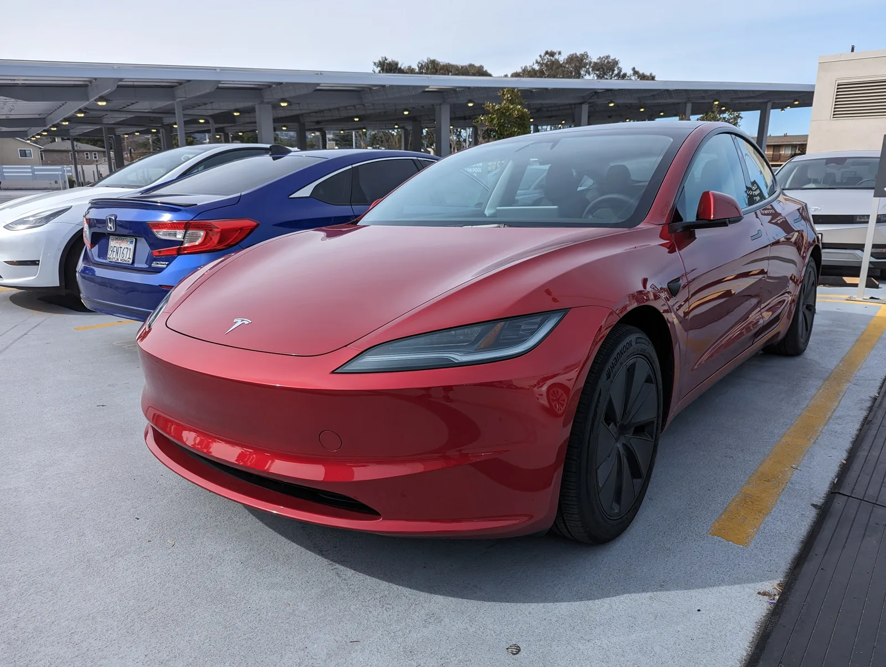
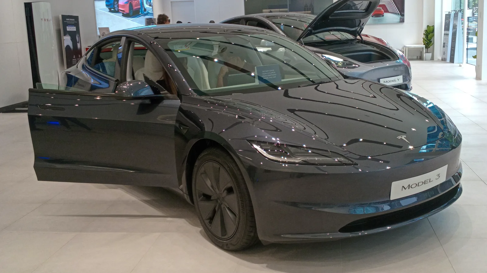
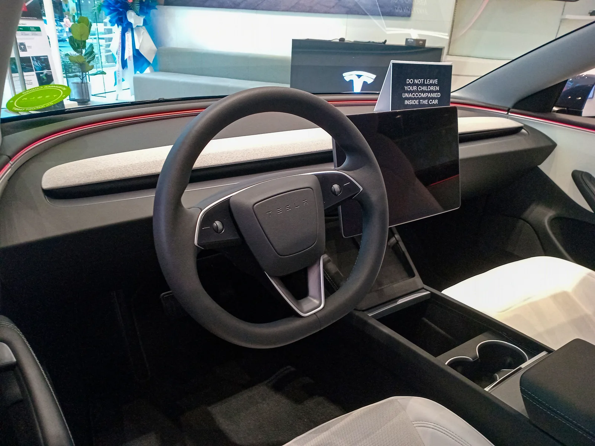
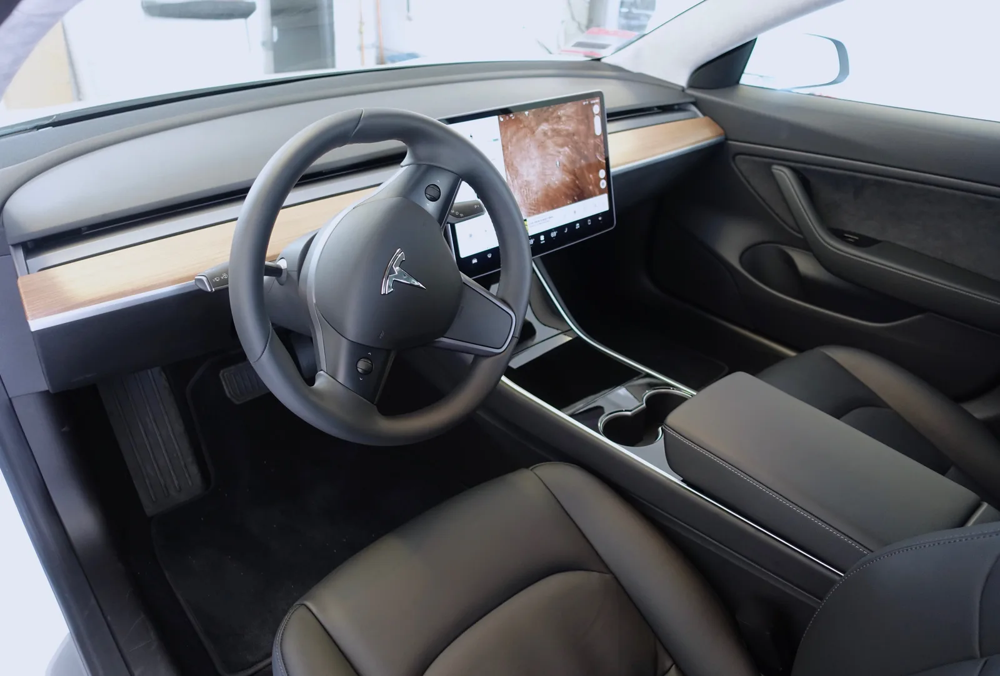
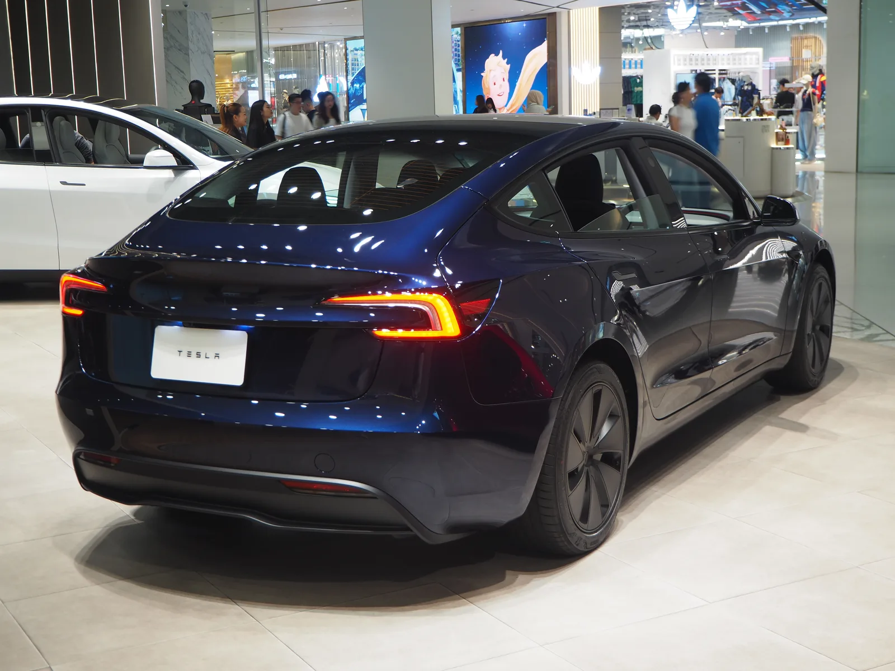

▲ 테슬라가 모델3 등에 탑재된 파 사이드 에어백(FSAB) 전개 로직 결함을 이유로 리콜에 나섰다 ⓒ Mliu92, Wikimedia Commons (CC BY-SA 4.0)
측면에서 기둥(폴)에 부딪히는 순간, 탑승자를 지켜줘야 할 에어백의 '타이밍 계산'이 어긋날 수 있다는 결함이다. 테슬라가 모델3를 포함한 주요 차종에서 파 사이드 에어백(Far Side Airbag, FSAB) 전개 로직 결함을 인정하고, 무선(OTA) 소프트웨어 업데이트를 통한 리콜에 나섰다. 사우디아라비아 상공부는 현지시간 9월 15일, 2024~2026년식 테슬라 모델3(프리미엄 LHD 사양) 182대를 리콜 대상으로 공식 발표했다. 같은 날 한국 국토교통부도 국내 판매된 모델3를 대상으로 동일 결함에 대한 리콜(자발적 시정조치)을 공지해, 국내 소유자에게도 직접 해당하는 사안이 됐다.
1. 무슨 일이 있었나 — 사우디 182대 리콜, 한국·EU도 같은 결함 확인
현지 매체 Khaleej Times와 Gulf Insider 보도에 따르면, 사우디아라비아 상공부(Ministry of Commerce)는 2026년 9월 15일 2024~2026년식 테슬라 모델3(프리미엄 LHD 사양) 182대에 대한 리콜을 발표했다. 결함 내용은 "파 사이드 에어백(FSAB) 활성화 캘리브레이션의 기술적 결함으로, 측면 충돌 발생 시 에어백이 의도한 대로 작동하지 않을 수 있어 부상 위험을 높인다"는 것이다.
같은 날 한국 국토교통부도 정부 리콜 정보 포털(소비자24·자동차리콜센터)에 테슬라코리아의 '모델3 Far-side-airbag 관련 리콜'을 공지했다. 대상은 2024년 7월 10일부터 2026년 7월 31일까지 생산된 모델3로, "원거리 측면 에어백의 설계 변경과 차체 등 다른 요소가 기둥측면충돌 시험에 영향을 미쳐 인체모형의 어깨 측면방향 하중이 기준 한도인 3kN을 초과할 가능성이 있다"는 것이 결함 내용이다. 시정조치는 사우디·EU와 마찬가지로 OTA를 통한 펌웨어 업데이트로 이뤄지며, 이 기사 작성 시점 기준 정확한 리콜 대수는 공개 페이지에 별도로 명시돼 있지 않다.
같은 결함은 유럽에서도 별도로 확인됐다. IT 매체 TeslAnt는 테슬라가 2026년 9월 1일부터 배포를 시작한 차량 펌웨어 2026.27.200의 배포 노트에 "이 소프트웨어 업데이트에는 EU 리콜 제출 건 2026_103555에 대한 조치가 포함돼 있으며, UN 유럽경제위원회 규정 135호(UNECE Regulation No. 135)에 대한 적합성을 회복한다"는 문구가 포함돼 있다고 전했다. 해당 펌웨어는 모델3·모델Y에 적용되는 것으로 표시돼 있다.
| 지역 | 대상·규모 | 발표·근거 | 조치 |
|---|---|---|---|
| 사우디아라비아 | 2024~2026년식 모델3(프리미엄 LHD) 182대 | 상공부, 2026년 9월 15일 발표 | Recalls.sa에서 VIN 조회 후 원격 소프트웨어 업데이트 |
| 한국 | 2024.7.10~2026.7.31 생산 모델3 (대수 미공개) | 국토교통부, 2026년 9월 15일 공지(테슬라코리아 자발적 시정조치) | OTA 펌웨어 업데이트로 원격 조치 |
| 유럽연합(EU) | 모델3·모델Y (구체 대수 미공개) | EU 리콜 제출 2026_103555, UN R135 적합성 조치 | 펌웨어 2026.27.200 등 OTA 업데이트(2026년 9월 1일부터 순차 배포) |
📍 미국 NHTSA 리콜 여부는 아직 별도 확인되지 않았다
이번 결함은 현재까지 사우디아라비아 상공부, 한국 국토교통부, 그리고 UN R135(폴 사이드 임팩트)를 적용하는 유럽 시장을 중심으로 확인된 사안이다. 미국 도로교통안전국(NHTSA)의 Part 573 리콜 데이터베이스에서 이 FSAB 결함과 명확히 일치하는 별도의 캠페인 번호는 재차 검색한 이 기사 갱신 시점(2026년 9월 20일) 기준으로도 확인되지 않았다. 미국은 UN R135를 채택하지 않고 자체 기준(FMVSS)을 적용하는 시장이라, 애초에 동일한 리콜이 미국에서 발생하지 않을 가능성도 있다. 미국 내 모델3 소유자는 테슬라 앱 또는 NHTSA 리콜 조회 페이지에서 차대번호(VIN)로 직접 확인하는 것이 정확하다.

▲ 테슬라 모델3. 이번 결함은 2024~2026년식 모델3를 포함해 여러 차종·연식에 걸쳐 있는 것으로 파악된다 ⓒ Ethan Llamas, Wikimedia Commons (CC BY-SA 4.0)
2. 결함의 정체 — '파 사이드 에어백'이 뭐고, 뭐가 문제인가
파 사이드 에어백(Far Side Airbag, FSAB)은 충돌 반대쪽에 앉은 탑승자를 보호하기 위한 장치다. 예를 들어 차량 왼쪽 측면이 기둥이나 다른 차량에 부딪히면, 오른쪽(먼 쪽, far side)에 앉은 탑승자의 몸이 충돌 방향으로 쏠리면서 옆자리 탑승자나 센터 콘솔에 부딪힐 위험이 있다. FSAB는 이런 상황에서 좌석 사이 또는 센터 콘솔 쪽에서 전개돼 탑승자의 쏠림을 막아주는 역할을 한다.
테슬라 공식 차량 소프트웨어 적합성 안내 페이지에 따르면, 이번 결함은 "측면 기둥 충돌(pole side impact) 시험에서 전방 좌석 탑승자에게 가해지는 최대 횡방향 어깨 충격력이 UN R135 규정이 정한 한도인 3.0kN을 초과할 수 있다"는 내용이다. UN R135는 유엔유럽경제위원회(UNECE)가 정한 '폴 사이드 임팩트(pole side impact)' 안전기준으로, 차량 측면을 단단한 기둥에 밀어붙이는 방식으로 측면 충돌 안전성을 평가한다.
✅ 결함 원인 요약
· 부위: 하드웨어 고장이 아니라 에어백 전개 시점·강도를 계산하는 소프트웨어 캘리브레이션(FSAB 전개 전략) 문제
· 증상: 측면 기둥 충돌 시 파 사이드 에어백이 계산대로 전개되지 않아, 탑승자 어깨에 실리는 충격력이 국제 기준치를 넘어설 가능성
· 실사용 체감: 평상시 주행에서는 별다른 경고나 증상이 나타나지 않으며, 실제 측면충돌 상황에서만 문제가 될 수 있는 유형의 결함
이번 결함과 관련한 테슬라의 공식 소프트웨어 적합성 안내는 아래에서 확인할 수 있다. 테슬라 공식 안내 바로가기

▲ 테슬라 모델3 실내. 파 사이드 에어백은 좌석·센터 콘솔 인근에서 전개돼 반대편 탑승자의 쏠림을 막아주는 장치다 ⓒ Ethan Llamas, Wikimedia Commons (CC BY-SA 4.0)

▲ 테슬라 모델3의 앞좌석과 센터 콘솔. 파 사이드 에어백은 이처럼 좌우 앞좌석 사이 공간에서 전개돼, 측면 충돌 시 반대편으로 쏠리는 탑승자의 몸을 붙잡아주는 역할을 한다 ⓒ Steve Jurvetson, Wikimedia Commons (CC BY 2.0)
3. 대상 차종·연식 — 모델3 중심, 모델Y·S·X·사이버트럭도 포함
소비자 대상 리콜로 구체화된 것은 모델3다. 사우디아라비아 사례는 2024~2026년식 모델3(프리미엄 LHD 사양) 182대로 한정돼 있고, 한국 국토교통부 리콜은 2024년 7월 10일~2026년 7월 31일 생산 모델3를 대상으로 한다. 반면 테슬라가 펌웨어 2026.27.200 배포 노트 및 소프트웨어 적합성 페이지에서 언급한 적용 범위는 더 넓다. TeslAnt 보도에 따르면 이 펌웨어는 모델3와 모델Y에 적용되는 것으로 표기돼 있고, 테슬라의 별도 안내에서는 모델S·모델3·모델X·모델Y·사이버트럭까지 이 결함과 관련한 소프트웨어 조치 대상으로 언급된다.
| 구분 | 내용 |
|---|---|
| 소비자 리콜로 확정된 대상 | 2024~2026년식 테슬라 모델3(프리미엄 LHD), 사우디아라비아 182대 |
| 한국 리콜 대상 | 2024.7.10~2026.7.31 생산 모델3, 국토교통부 2026년 9월 15일 공지(대수 미공개) |
| EU 리콜 제출 대상 | 모델3·모델Y (정확한 연식·대수는 미공개) |
| 테슬라가 언급한 소프트웨어 적용 차종 | 모델S·모델3·모델X·모델Y·사이버트럭 |
| 조치 완료 확인 방법 | 차량 소프트웨어 버전이 2026.26.100.2, 2026.27.200, 2026.32.3 또는 그 이후 릴리스면 조치 완료 |
즉 '모델3만의 문제'로 좁혀 볼 사안은 아니며, 테슬라가 공유하는 FSAB 전개 로직 자체의 캘리브레이션 이슈에 가깝다. 다만 이 기사 작성 시점까지 국가 규제당국이 정식으로 대수를 명시해 리콜을 발표한 사례는 사우디아라비아의 모델3 182대가 유일하다.
4. 조치 방법 — 서비스센터 방문 없이 무선 업데이트로 해결
부품 교체가 아니라 소프트웨어 업데이트로 해결되는 결함이다. 사우디아라비아 사례에서 상공부는 소유자에게 Recalls.sa 플랫폼에서 차대번호(VIN)를 조회해 자신의 차량이 대상에 포함되는지 확인하고, 서비스센터 방문 없이 원격으로 필요한 소프트웨어 업데이트를 설치하도록 안내했다. 설치에 어려움이 있는 경우 테슬라걸프(Tesla Gulf Limited) 고객센터로 문의하면 된다.
테슬라는 앞서 2026년 9월 1일부터 이 결함에 대한 조치가 포함된 차량 펌웨어 2026.27.200 배포를 시작했으며, 이보다 먼저 배포된 2026.26.100.2나 이후 배포되는 2026.32.3 등 후속 릴리스에도 동일한 조치가 반영돼 있다. 해당 버전 이상의 소프트웨어가 설치된 차량은 별도 조치가 필요하지 않다는 것이 테슬라 측 설명이다. 한국 국토교통부가 공지한 리콜 역시 서비스센터 방문 없이 동일한 방식의 OTA 펌웨어 업데이트로 조치된다.
✅ 국내외 모델3 소유자가 확인해야 할 것
· 차량 터치스크린에서 소프트웨어 버전이 2026.26.100.2 / 2026.27.200 / 2026.32.3 이상인지 확인
· 해당 버전 미만이라면 무선 업데이트가 도착하는 대로 즉시 설치
· 국내 등록 차량은 테슬라코리아 또는 테슬라 앱을 통해 리콜 대상 여부를 확인하는 것이 정확하다
· 평상시 주행에는 별다른 경고등이나 이상 징후가 나타나지 않는 결함이므로, 소프트웨어 버전 확인이 가장 확실한 방법이다

▲ 테슬라 모델3 후면. 이번 리콜은 부품 교체 없이 무선 소프트웨어 업데이트만으로 조치가 이뤄진다 ⓒ Chanokchon, Wikimedia Commons (CC BY-SA 4.0)
5. 테슬라 사이드 에어백, 이번이 처음 아니다 — 과거 유사 리콜 이력
테슬라의 측면 에어백 계열 결함은 이번이 처음이 아니다. 2021년에는 2017~2021년식 모델3에서 커튼형 사이드 에어백이 루프 레일에 제대로 고정되지 않아 뒤틀린 상태로 장착될 수 있다는 이유로 리콜이 있었고, 테슬라는 서비스센터를 통해 좌우 커튼 에어백을 점검·재정렬했다. 2022년에는 모델X에서 창문이 내려가 있는 상태에서 앞좌석 커튼 사이드 에어백이 의도대로 전개되지 않을 수 있다는 결함으로 약 7,289대가 리콜 대상에 올랐다.
| 시점 | 차종 | 결함 내용 |
|---|---|---|
| 2021년 | 2017~2021년식 모델3 | 커튼형 사이드 에어백이 루프 레일에 제대로 고정되지 않아 뒤틀림 가능 |
| 2022년 | 2021~2022년식 모델X (약 7,289대) | 창문이 내려간 상태에서 앞좌석 커튼 사이드 에어백 미전개 가능 |
| 2026년(이번 건) | 2024~2026년식 모델3 등 | 파 사이드 에어백(FSAB) 전개 로직 결함, 측면 기둥 충돌 시 어깨 충격력 기준 초과 가능 |
과거 사례들이 에어백 자체의 물리적 장착·전개 여부 문제였다면, 이번 결함은 에어백이 켜지고 꺼지는 타이밍과 강도를 계산하는 소프트웨어 로직의 문제라는 점에서 성격이 다르다. 다만 무선 업데이트 하나로 전 세계 차량에 조치를 반영할 수 있다는 점은, 최근 테슬라 리콜들이 대부분 OTA 방식으로 신속하게 마무리되는 흐름과 일치한다.
6. 요약
테슬라가 모델3 등에 탑재된 파 사이드 에어백(FSAB) 전개 로직의 소프트웨어 캘리브레이션 결함을 인정하고 무선 업데이트를 통한 리콜에 나섰다. 측면 기둥 충돌 시험에서 탑승자 어깨에 가해지는 횡방향 충격력이 UN R135 기준(3.0kN)을 초과할 수 있다는 것이 결함의 핵심이다.
사우디아라비아 상공부는 2026년 9월 15일 2024~2026년식 모델3(프리미엄 LHD) 182대에 대한 리콜을 공식 발표했다. 같은 날 한국 국토교통부도 2024년 7월~2026년 7월 생산 모델3에 대한 동일 결함 리콜을 공지했고, 유럽에서도 리콜 제출 건(2026_103555)이 확인됐다. 테슬라는 2026년 9월 1일부터 배포한 펌웨어 2026.27.200 등을 통해 서비스센터 방문 없이 원격으로 문제를 해결하고 있다.
국내를 포함한 모델3 소유자는 차량 소프트웨어 버전이 2026.26.100.2·2026.27.200·2026.32.3 이상인지 확인하는 것이 가장 확실한 대응이다. 미국 NHTSA 차원의 별도 리콜 캠페인 번호는 이 기사 갱신 시점(2026년 9월 20일) 기준으로도 확인되지 않았으며, 후속 발표가 있을 경우 업데이트할 예정이다.